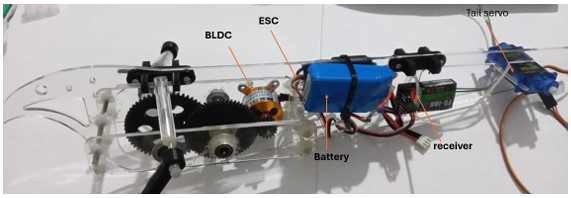

WHAT IT DOES
A complete bio-inspired ornithopter — designed, simulated, fabricated, and force-tested end-to-end. From a Solid Edge assembly through FEA and CFD through a custom ROS+Gazebo simulator through a physical prototype flying on an ESP32-controlled radio link.
110 cm wingspan, 4.3 N final weight, single-wing mechanism with a 1:14 multi-stage gearbox, and a servo-actuated tail providing roll, pitch, and yaw authority.
WHY IT'S PUBLIC
Most flapping-wing research relies on MATLAB/Simulink for aerodynamic simulation. This project developed custom lift/drag plugins directly in ROS+Gazebo, integrating real aerodynamic coefficients computed from ANSYS and Vortex Lattice Method into the simulation loop — the ROS package is published open-source as an alternative path for the robotics community.

THE HARD PART
The engineering challenge wasn't any single subsystem — it was making the simulation match the physics. Flapping-wing flight has no clean analytical model, so the workflow was: measure forces on a physical test bench, feed those measurements into the simulation, and iterate until the ROS+Gazebo model produced believable flight dynamics.
CHALLENGES ENCOUNTERED
- Vortex Lattice Method convergence. The VLM solver used for wing-lift approximation failed to converge at high flapping frequencies due to the strongly unsteady wake dynamics. Worked around by switching to a hybrid approach: VLM as the low-frequency envelope, ANSYS 2D CFD at representative cross-sections for the high-frequency components.
- 3D-printed structural strength. Early FDM-printed brackets and coupler links failed under the cyclic flapping loads. Iterated on wall thickness, print orientation, and ultimately replaced stressed ball joints with reinforced through-holes and a new coupler geometry.
- Communication subsystem complexity. The original plan included full IMU-based semi-autonomous flight with switchable manual/auto modes via an ESP32 + nRF24L01 link. The final prototype flew under manual control only — full autonomy was descoped to keep the prototype flying within the project timeline.
- Wing material trade-off. Carbon fiber was preferred for stiffness-to-weight ratio but was difficult to source locally. Tested rigid mylar, flexible mylar, and a stiffer final variant; settled on the flexible membrane because it produces a smoother average lift profile per flapping cycle.
THE LESSON
This project was the first time I had to coordinate structural FEA, aerodynamic simulation, mechanical prototyping, and embedded communication into a single working system — and the first time I discovered that the failure modes of a simulation are just as interesting as the failure modes of the physical hardware. That realization shaped everything I've built since.
MECHANICAL ARCHITECTURE
- Wingspan: ~110 cm · root chord: ~20 cm · skeleton: 40 cm
- Tail: ~18 cm radius, ~20° deflection range, servo-actuated
- Gearbox: 1:14 multi-stage — pinion, intermediate, output gear
- Final weight: 4.3 N including 7.4 V battery and brushless motor
- Motor: 1000 kV brushless at 7.4 V, driving 44,000 °/s at the motor shaft
STRUCTURAL ANALYSIS
- MSC Adams multibody dynamics used to predict torque and force on ball joints and brackets throughout the flapping stroke
- Topology optimization on the output gear to remove mass without compromising tooth strength
- ANSYS static structural FEA validated the redesigned brackets — deformation within acceptable limits under peak predicted loads
AERODYNAMIC ANALYSIS
- Thin airfoil theory as a first-pass estimate for wing lift and drag
- Vortex Lattice Method for finite-wing effects across flapping frequencies
- ANSYS 2D CFD (parameterized by chord length, angle of attack, and relative velocity) to model the lift curve at representative cross-sections
- ANSYS 3D simulations for tail-induced yaw, pitch, and roll moments at different tail positions
- Key finding: 6 Hz is the optimal flapping frequency — above this, the wing structure approaches its first vibration mode

CUSTOM AERODYNAMIC PLUGINS
Built four custom Gazebo plugins that apply forces directly to the flapping model at every simulation step, driven by real coefficients computed offline in ANSYS and VLM:
/* Plugin set — one per physical effect */ flapping_controller_plugin // Wing motion driven by motor velocity pitching_controller_plugin // Tail pitch → pitching moment rolling_controller_plugin // Asymmetric flapping → roll moment lift_drag_plugin // Aerodynamic forces per flap phase
AERODYNAMIC MODEL INTEGRATION
Velocity data from the Adams multibody simulation fed a numerical lift approximation using the Vortex Lattice Method. The resulting per-flap-phase force curves were then applied inside Gazebo as alternating forces — mimicking the actual flapping strokes — with the key insight that membrane-wing aeroelasticity produces a net positive average lift per cycle, unlike a rigid wing.
SIMULATION GUI
A custom flight simulator GUI (Python + Tkinter) provided live sliders for throttle, pitch, and roll during Gazebo simulation — with real-time readout of height, acceleration, velocity, and flapping frequency.

TEST BENCH
A three-load-cell test bench (10 kg range each, Arduino-based data acquisition, Python GUI) measured vertical and horizontal force at takeoff. The bench validated the numerically predicted lift and drag curves against physical measurement, closing the loop between simulation and reality.